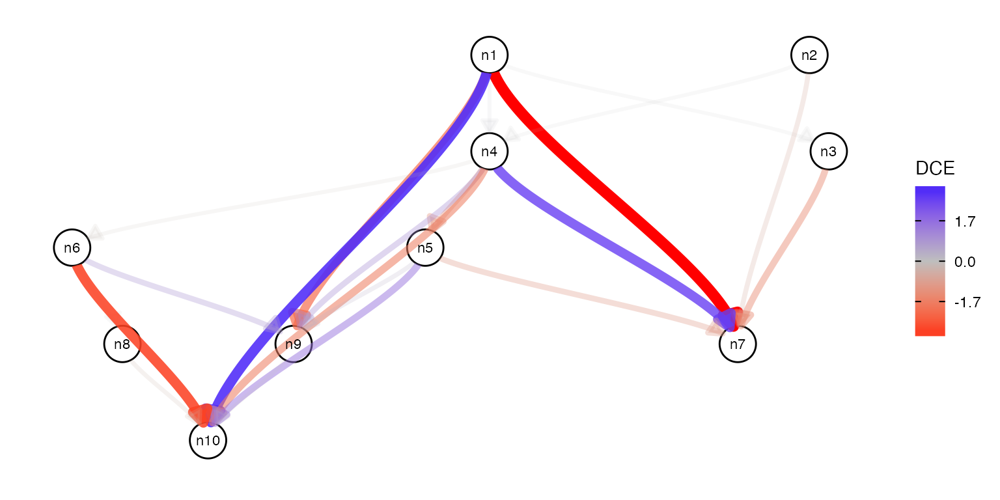

example.RmdFirst we generate a random wild type network and then resample its edge weights to generate the mutant network.
node_num <- 10
edge_prob <- 0.2
graph_wt <- create_random_DAG(node_num, edge_prob)
graph_mt <- resample_edge_weights(graph_wt)We can then simulate data for these two networks.
X_wt <- simulate_data(graph_wt)
X_mt <- simulate_data(graph_mt)Finally, it is possible to compute differential causal effects.
res <- dce_nb(graph_wt, X_wt, X_mt)
res %>% as.data.frame %>% drop_na## source target dce dce_stderr dce_pvalue
## 1 n1 n3 0.004294363 0.007024583 5.409788e-01
## 2 n2 n4 1.538064160 0.009299901 0.000000e+00
## 3 n4 n5 -1.682516547 0.159245404 4.304014e-26
## 4 n2 n7 -3.431730936 0.069117089 0.000000e+00
## 5 n5 n7 -0.072819967 0.173228130 6.742149e-01
## 6 n4 n10 0.840627006 0.177458277 2.168621e-06
## 7 n5 n10 0.058833378 0.095514886 5.379207e-01The result can be visualized.
plot(res)
## R version 4.0.3 (2020-10-10)
## Platform: x86_64-apple-darwin19.6.0 (64-bit)
## Running under: macOS Catalina 10.15.7
##
## Matrix products: default
## BLAS: /usr/local/Cellar/openblas/0.3.13/lib/libopenblasp-r0.3.13.dylib
## LAPACK: /usr/local/Cellar/r/4.0.3_2/lib/R/lib/libRlapack.dylib
##
## locale:
## [1] en_US.UTF-8/en_US.UTF-8/en_US.UTF-8/C/en_US.UTF-8/en_US.UTF-8
##
## attached base packages:
## [1] stats graphics grDevices utils datasets methods base
##
## other attached packages:
## [1] dce_0.99.0 forcats_0.5.0 stringr_1.4.0 dplyr_1.0.2
## [5] purrr_0.3.4 readr_1.4.0 tidyr_1.1.2 tibble_3.0.4
## [9] tidyverse_1.3.0 ggraph_2.0.4 ggplot2_3.3.3 BiocStyle_2.18.1
##
## loaded via a namespace (and not attached):
## [1] rappdirs_0.3.1 prabclus_2.3-2 ragg_0.4.0
## [4] bit64_4.0.5 knitr_1.30 multcomp_1.4-15
## [7] data.table_1.13.6 generics_0.1.0 metap_1.4
## [10] BiocGenerics_0.36.0 TH.data_1.0-10 RSQLite_2.2.2
## [13] CombinePValue_1.0 bit_4.0.4 mutoss_0.1-12
## [16] webshot_0.5.2 xml2_1.3.2 lubridate_1.7.9.2
## [19] httpuv_1.5.4 assertthat_0.2.1 viridis_0.5.1
## [22] amap_0.8-18 xfun_0.20 hms_0.5.3
## [25] evaluate_0.14 promises_1.1.1 DEoptimR_1.0-8
## [28] fansi_0.4.1 dbplyr_2.0.0 readxl_1.3.1
## [31] Rgraphviz_2.34.0 igraph_1.2.6 DBI_1.1.0
## [34] tmvnsim_1.0-2 htmlwidgets_1.5.3 apcluster_1.4.8
## [37] RcppArmadillo_0.10.1.2.2 stats4_4.0.3 ellipsis_0.3.1
## [40] crosstalk_1.1.0.1 backports_1.2.1 bookdown_0.21
## [43] permute_0.9-5 gbRd_0.4-11 aod_1.3.1
## [46] vctrs_0.3.6 Biobase_2.50.0 Linnorm_2.14.0
## [49] abind_1.4-5 RcppEigen_0.3.3.9.1 withr_2.3.0
## [52] ggforce_0.3.2 sfsmisc_1.1-8 robustbase_0.93-7
## [55] bdsmatrix_1.3-4 checkmate_2.0.0 vegan_2.5-7
## [58] pcalg_2.7-1 mclust_5.4.7 mnormt_2.0.2
## [61] cluster_2.1.0 crayon_1.3.4 ellipse_0.4.2
## [64] labeling_0.4.2 edgeR_3.32.0 pkgconfig_2.0.3
## [67] tweenr_1.0.1 nlme_3.1-151 ggm_2.5
## [70] nnet_7.3-14 rlang_0.4.10 diptest_0.75-7
## [73] lifecycle_0.2.0 miniUI_0.1.1.1 sandwich_3.0-0
## [76] mathjaxr_1.0-1 modelr_0.1.8 cellranger_1.1.0
## [79] rprojroot_2.0.2 polyclip_1.10-0 matrixStats_0.57.0
## [82] graph_1.68.0 Matrix_1.3-2 carData_3.0-4
## [85] zoo_1.8-8 reprex_0.3.0 viridisLite_0.3.0
## [88] blob_1.2.1 rgl_0.103.5 manipulateWidget_0.10.1
## [91] S4Vectors_0.28.1 scales_1.1.1 plyr_1.8.6
## [94] memoise_1.1.0 graphite_1.36.0 magrittr_2.0.1
## [97] gdata_2.18.0 compiler_4.0.3 plotrix_3.7-8
## [100] clue_0.3-58 cli_2.2.0 ps_1.5.0
## [103] formatR_1.7 MASS_7.3-53 mgcv_1.8-33
## [106] tidyselect_1.1.0 stringi_1.5.3 textshaping_0.2.1
## [109] yaml_2.2.1 locfit_1.5-9.4 ggrepel_0.9.0
## [112] grid_4.0.3 tools_4.0.3 parallel_4.0.3
## [115] rio_0.5.16 rstudioapi_0.13 foreign_0.8-81
## [118] snowfall_1.84-6.1 gridExtra_2.3 farver_2.0.3
## [121] Rtsne_0.15 digest_0.6.27 BiocManager_1.30.10
## [124] shiny_1.5.0 flexclust_1.4-0 mnem_1.6.5
## [127] fpc_2.2-9 ppcor_1.1 Rcpp_1.0.5
## [130] car_3.0-10 broom_0.7.3 later_1.1.0.1
## [133] httr_1.4.2 ggdendro_0.1.22 AnnotationDbi_1.52.0
## [136] kernlab_0.9-29 naturalsort_0.1.3 Rdpack_2.1
## [139] colorspace_2.0-0 rvest_0.3.6 fs_1.5.0
## [142] IRanges_2.24.1 splines_4.0.3 RBGL_1.66.0
## [145] statmod_1.4.35 sn_1.6-2 expm_0.999-5
## [148] pkgdown_1.6.1.9000 graphlayouts_0.7.1 multtest_2.46.0
## [151] matlib_0.9.4 flexmix_2.3-17 systemfonts_0.3.2
## [154] xtable_1.8-4 jsonlite_1.7.2 tidygraph_1.2.0
## [157] corpcor_1.6.9 modeltools_0.2-23 R6_2.5.0
## [160] gmodels_2.18.1 TFisher_0.2.0 pillar_1.4.7
## [163] htmltools_0.5.0 mime_0.9 glue_1.4.2
## [166] fastmap_1.0.1 class_7.3-17 codetools_0.2-18
## [169] tsne_0.1-3 mvtnorm_1.1-1 lattice_0.20-41
## [172] numDeriv_2016.8-1.1 curl_4.3 gtools_3.8.2
## [175] zip_2.1.1 openxlsx_4.2.3 survival_3.2-7
## [178] limma_3.46.0 rmarkdown_2.6.4 desc_1.2.0
## [181] fastICA_1.2-2 munsell_0.5.0 e1071_1.7-4
## [184] fastcluster_1.1.25 reshape2_1.4.4 haven_2.3.1
## [187] gtable_0.3.0 glm2_1.2.1 rbibutils_2.0